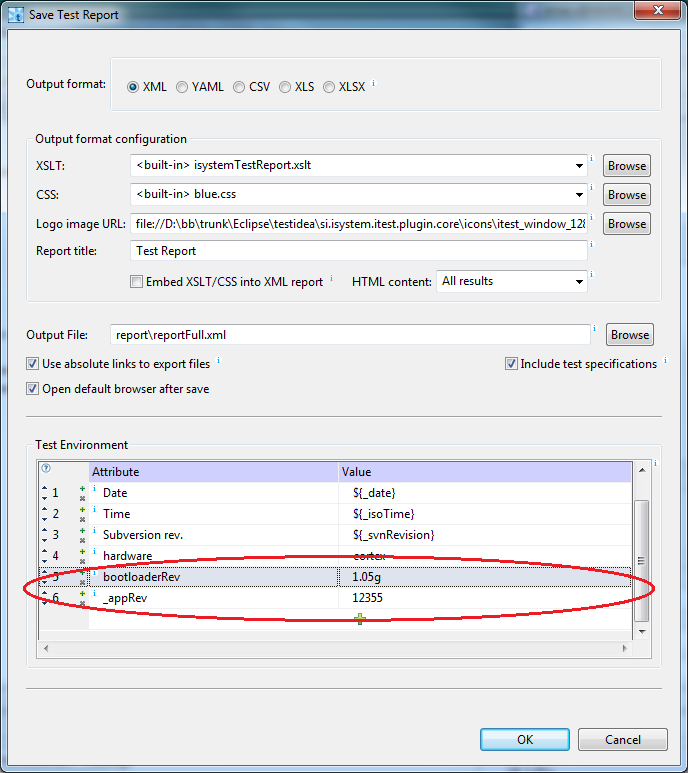

Each parameter is described in its tool-tip.
Note: Path to Python interpreter is the same as used by winIDEA. If you need to change it, please see winIDEA dialog , tab .
There exist six extension points in test case:
ic.CTestCaseController.POSITION_PARAM_NAME_PREFIX + indexwhere index is 0 for the first parameter, 1 for the second, ... Example:
self.param0 = ic.CTestCaseController.POSITION_PARAM_NAME_PREFIX + '0'
self.testCtrl.modify(self.param0, "1234")
If parameter 0 is char array, we can write:
self.testCtrl.modify(self.param0 + '[1]', "'a'")
The target should not be started at this point, so calls
like run(), stepOver(),
call()... from CExecutionController are not
allowed here.
run(), stepOver(),
call()... from CExecutionController are not
allowed in this script function.
Script functions should be implemented as methods of class in
Python module. First we create a file with extension py. File
name is also the name of the module. This name should be specified
in the Imported modules field in the configuration dialog
above. This way testIDEA can tell Python interpreter where
to find our code.
Next we write a class in the created file. It is a normal Python class with methods. Names of the methods must be the same as given in test case. The number of parameters must also match.
Example of class with one extension method:
class SampleExtension:
def __init__(self, mccMgr = None):
pass
def initTarget(self):
print 'Executing initTarget()'
Since we'll usually need isystem.connect calls to access
the target, it is a good idea to import the module and initialize
access object in extension class constructor, for example:
import isystem.connect as ic
class SampleExtension:
def __init__(self, mccMgr = None):
"""
Normally we'll connect to winIDEA, which is running the test, so that
target state can be accessed/modified by this script.
"""
if mccMgr == None:
# Executed when called from testIDEA.
# Connection can't be passed between processes.
self.mccMgr = None
self.connectionMgr = ic.ConnectionMgr()
self.connectionMgr.connectMRU()
self.debug = ic.CDebugFacade(self.connectionMgr)
else:
# Executed when called from generated script - connection is reused.
self.mccMgr = mccMgr
self.connectionMgr = mccMgr.getConnectionMgr('')
self.debug = mccMgr.getCDebugFacade('')
self.testCtrl = None
def initTarget(self):
print 'Executing initTarget()'
for i in range(0, 10):
self.debug.modify(ic.IConnectDebug.fMonitor, 'g_charArray1[' + str(i) + ']',
str(i*i))
Note that for access to test local variables declared in testIDEA, we have to use
instance of class CTestCaseController. See below for
procedure of getting this object.
If this class is saved to
file sampleTestExtensions.py, we
configure testIDEA as shown in the image above. Similar
class can be found in Python SDK: examples\winIDEA\sampleTestExtensions.py.
None, it means no error
and test execution continues normally. If the function returns non-empty string,
it is considered as error in test results, and the string contents is shown
in test reports as the reason of test failure. Make sure the
function returns only None or string, but no other types.
_isys_,
followed by tag used in test specification for extension function, and followed
by postfix Info. All extension functions and
corresponding variables are shown
in the following table:
| Extension (tag) | Variable name |
|---|---|
| Initialize Target (initTarget) | _isys_initTargetInfo |
| Initialize Variables (initFunc) | _isys_initFuncInfo |
| Verify Variables (endFunc) | _isys_endFuncInfo |
| Restore Target (restoreTarget) | _isys_restoreTargetInfo |
| Stubs (stub: script) | _isys_stubInfo |
| Test Points (testPoint: script) | _isys_testPointInfo |
Example of setting a variable in Python script:
self._isys_initTargetInfo = 'information from initTarget()'
Variables are set to None by testIDEA after extension function returns.
Return values and info variables of each function can be seen in tool-tips of
decorations next to extension function name in section Scripts in
testIDEA. Red decoration means error, green one means information is available,
while no decoration means no error and no information:
Important: Standard output (print statements) should be used for debugging only, and script info and return values should be at most few lines long. This way reports and information in testIDEA UI will be readable. For more extensive measurements scripts should use files.
CTestCaseController. Before testIDEA
calls script extension functions it sets Python variable
_isys_testCaseHandle to the value of current test
case handle. To instantiate CTestCaseController
inside script extension functions use the following
Python code:
def myExtFunction(self, testSpec):
if self.testCtrl == None:
self.testCtrl = ic.CTestCaseController(self.connectionMgr,
self._isys_testCaseHandle)
To access target variables use the following example:
# 'nItems' is the name of parameter specified in 'Parameters' field of the
# 'Stubs' section in testIDEA. 'srv' is the name of return value as
# specified in the same section.
# Format specifier 'd' in 'nItems,d' ensures that the returned string
# always contains decimal value.
nItems_t = int(self.testCtrl.evaluate('nItems,d'))
print 'nItems = ', nItems_t
self.testCtrl.modify('srv', str(nItems_t * 2))
Tip: To avoid confusion, it is highly recommended to
use a prefix or postfix for all Python variables, which are
related to target variables. For example, above we have used
postfix _t to mark that Python variable nItems_t
is related to target variable nItems.
_isys_testSpec. This parameter is initialized to the instance
of CTestSpecification,
which contains all information about the test case executed.
_isys_ are reserved. It is strongly
advised to not use such names for custom identifiers, to avoid
problems with the future versions of testIDEA.
Run | Run with filter). It
should return None if the test should NOT be executed,
and any non-empty string when the test should be
executed. Currently the string returned is not used, but in
the future it may be stored in test reports, so the recommended
value is description why the test was selected for execution,
for example:
This function is part of communication module.
isys_getTestReportCustomData(self,
reportConfig) can be used to provide data to be used in test
report. When implemented, it is called when user selects
command , before the dialog opens. The function
should set
variable self._isys_customScriptMethodInfo to
string containing key: value pairs, one pair
per line. These data is then added to report Test
environment. Examples of usage are revisions of tested
components.
def isys_getTestReportCustomData(self, reportConfig):
# get revisions as mapping
data = {'_appRev': 12355, 'bootloaderRev': '1.05g'}
# create string of 'key: value' pairs suitable for test report
dataAsList = [(k + ': ' + str(v)) for k, v in data.items()]
self._isys_customScriptMethodInfo = '\n'.join(dataAsList)
If key starts with an underscore, it is saved to test
report, but it is not saved to iyaml file. Other key/value
pairs are saved also to iyaml file.

Return value should beNone if no error occurred, error
message as string otherwise.isys_afterReportSave(self, reportConfig)
can be used to post-process test report, or send/commit it
to a database, for example. None if no error occurred, error
message as string otherwise.reportConfig in script functions called during report saving
contains report configuration as string in iyaml format, for example:
testIDEAVersion: 9.12.279
winIDEAVersion: 9.12.279
reportContents: full
outFormat: xml
fileName: 'report\reportFull.xml'
iyamlFileName: d:\bb\trunk\sdk\targetProjects\testIDEADemo.iyaml
xsltFull: ' isystemTestReport.xslt'
xmlLogoImage: file://D:\bb\trunk\Eclipse\testidea\si.isystem.itest.plugin.core\i
cons\itest_window_128.gif
xmlReportHeader: |-
Test Report
cssFile: blue.css
csvSeparator: ','
isCSVHeaderLine: true
isXLSVerticalHeader: false
isIncludeTestSpec: true
isAbsPathForLinks: true
htmlViewMode: all
testInfo:
Date: 2016-05-16
Time: 16:11:04
Subversion rev.: 58135
description: release build
hardware: cortex
wiWorkspacePath:
bootloader: '1.05g'
_appRev: '12.35'
Example:
def isys_cmd_printHi(self, iyamlFile):
print("HI! Script method executed, parameter = ", iyamlFile)
For function output the same rules as for
other extension functions defined in this file apply. Method result can be
printed to stdout or stored to variable self._isys_customScriptMethodInfo.
Any text printed to stderr or return value other than None mean
error.
See file basicTutorialExtensions.py, which comes with SDK for
examples.
To avoid inconveniently long lists in the menu, scripts are sorted alphabetically, and only the first ten are used. One possible naming convention for scripts, which we want to run from testIDEA, would be to start their names with an underscore ('_') character.
Scripts can be run in three modes: